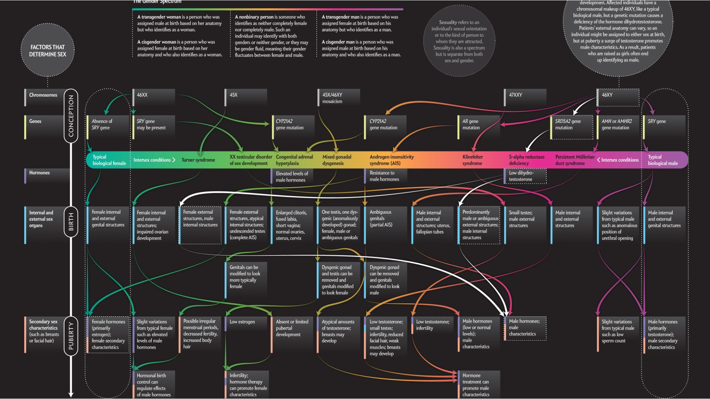
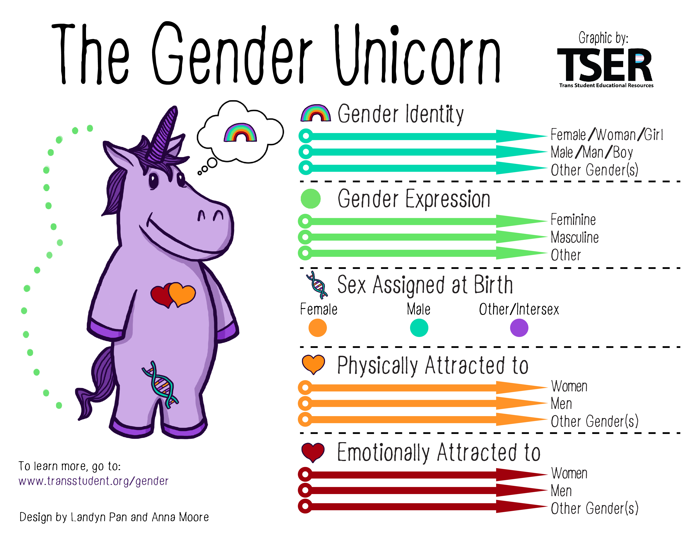
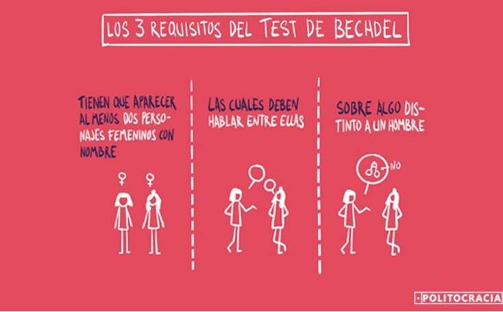
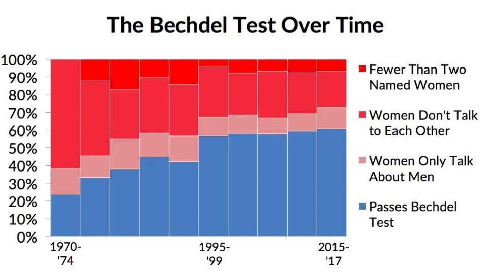
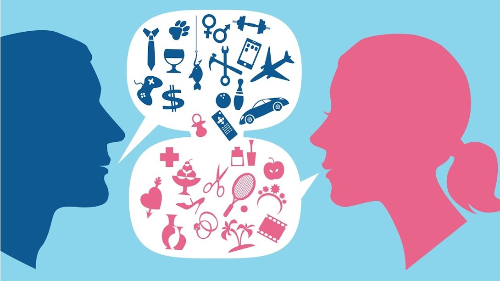
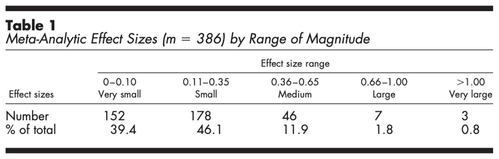
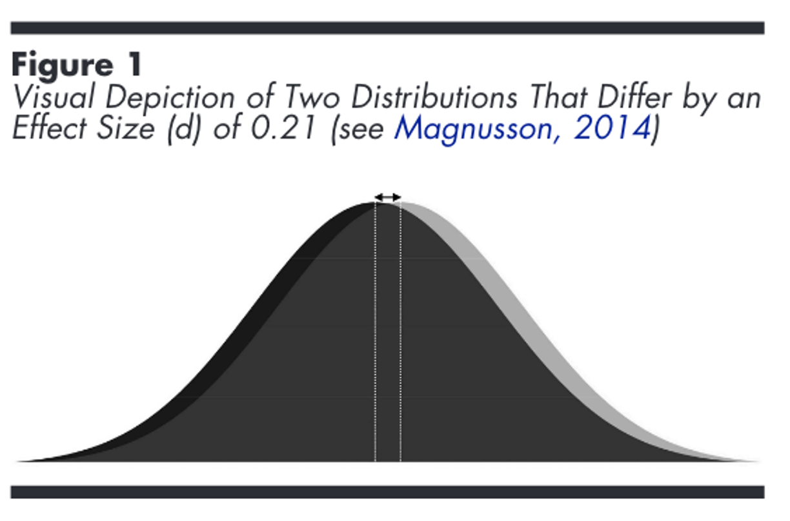

Clase 2: Binarismo, esencialismo y otras construcciones sociales
SOL191 · Instituto de Sociología · PUC
SOL191 · Clase 2
Primera parte (~45 min)
Segunda parte (~45 min)
Hay dos tipos de personas: aquellas que tienen cuerpos de hombre y son masculinas, y aquellas que tienen cuerpos de mujer y son femeninas. Estos dos tipos son fundamentalmente diferentes y opuestos.
Pregunta para la sala: ¿Cuáles son algunas implicancias del binarismo? ¿Qué facilita? ¿Qué dificulta?
La determinación del sexo biológico involucra múltiples etapas y no siempre es clasificable en términos binarios. Se estima que aproximadamente un 1,7% de la población presenta alguna variación intersexual — una frecuencia similar a la del pelo rojo.

Determinación del sexo biológico (Scientific American). Fuente: Fausto-Sterling (2000)
Video: Consecuencias médicas y sociales de la intersexualidad
https://www.youtube.com/watch?v=2S0e-i117vY
En grupos de 3-4 personas:
⏱ 5 min discusión grupal · 5 min plenario

Cinco dimensiones independientes, cada una en espectro (APA 2024):
Identidad de género: sentido interno de ser hombre, mujer, ambos, ninguno u otro.
Expresión de género: cómo comunicamos nuestro género (apariencia, vestimenta, comportamiento).
Sexo asignado al nacer: designación basada en anatomía, hormonas y cromosomas.
Atracción sexual: hacia quién(es) sentimos atracción física.
Atracción romántica: hacia quién(es) sentimos atracción emocional. Puede diferir de la sexual.
El binarismo va más allá del sexo biológico: también se espera que las personas se identifiquen con un género binario.
Se espera que una persona asignada de sexo “masculino” al nacer se identifique como hombre y se comporte “como hombre”.
Más de 1 de cada 10 personas reporta sentirse tan masculina como femenina, o más “atípica” que “típica” en su identidad de género.
Personas transgénero: experimentan alguna forma de incongruencia entre el sexo asignado al nacer y su identidad de género.
Personas no binarias / genderqueer: rechazan el binarismo de género o no se identifican exclusivamente como hombre o mujer. Incluye identidades como género fluido.
Personas cisgénero: su identidad de género coincide con el sexo asignado al nacer.
Estas categorías no son binarias entre sí — la diversidad de experiencias dentro de cada grupo es enorme.
(Compton & Bridges 2013)
La constancia de género se establece desde antes de nacer y se refuerza durante toda la crianza, tanto para niños/as como para los adultos que los crían.
Los objetos adquieren género: juguetes, ropa, colores, decoración.
Preguntas para reflexionar:
“El género es la estructura de relaciones sociales que se centra en el ámbito reproductivo, y en el conjunto de prácticas que introducen las distinciones reproductivas entre cuerpos en los procesos sociales.”
— Connell (2009: 11)
El género es multidimensional: va más allá de nuestra identidad o de un solo ámbito como la sexualidad. Los patrones de género varían entre contextos, pero siempre son patrones de género. Se reproducen socialmente por el poder de la estructura sobre la acción individual, pero también cambian en la medida en que creamos nuevas situaciones.
(Johnson 2015)
Tipo de sociedad que promueve el privilegio masculino mediante su hombre-dominación, hombre-identificación y hombre-centrismo.
Privilegio: cualquier ventaja no ganada disponible para miembros de una categoría social, mientras es sistemáticamente negada a miembros de otra.
Las posiciones de autoridad — política, económica, legal, religiosa, educacional, militar, doméstica — están generalmente reservadas para los hombres.
Genera diferencias de poder y promueve la idea de que los hombres son superiores a las mujeres.
¿Qué ejemplos ven en Chile hoy?
Las ideas y creencias culturales sobre lo que es bueno, deseable, preferido o normal están culturalmente asociadas a cómo pensamos la masculinidad.
¿Qué otros ejemplos identifican?
Ejemplo: el “trabajador ideal”
El estándar del buen trabajador asume disponibilidad total, sin responsabilidades de cuidado — un perfil históricamente masculino. Quien no calza (mayoritariamente mujeres) es evaluado como menos comprometido. El estándar parece neutro, pero está construido sobre una norma masculina.
El foco de atención está principalmente en hombres y niños y lo que ellos hacen: en las conversaciones, las películas, las historias, las noticias.
¿Conocen el test de Bechdel? ¿Qué otros ejemplos de hombre-centrismo identifican?


Requisitos del test de Bechdel
(Manne 2018)
La función de vigilar y fiscalizar la aplicación de las normas y expectativas del patriarcado.
Atributo de contextos sociales donde mujeres y niñas reciben tratamiento hostil — frecuentemente cuando violan el orden patriarcal.
Ideología cuya función es racionalizar y justificar las relaciones sociales patriarcales.
Naturaliza las diferencias entre sexos para hacer el orden social parecer inevitable. Supuestos, creencias, estereotipos y narrativas que representan a mujeres y hombres como significativamente diferentes.
El control como valor fundamental (Johnson 2015)
Los hombres mantienen su privilegio controlando tanto a mujeres como a otros hombres y disidencias que lo pongan en riesgo. Para controlar a otro, es necesario verse como separado de otro.
¿Qué es la opresión?
Un sistema de desigualdad social a través del cual un grupo es posicionado para dominar y beneficiarse de la explotación y subordinación de otro grupo.
Un grupo no puede ser oprimido “por la sociedad” — la opresión ocurre en la relación entre grupos.
El binarismo fortalece la idea de “opuestos” e incentiva la maximización de las diferencias aparentes entre hombres y mujeres, haciendo el binarismo parecer más importante de lo que es.
La realidad es que hay mucho más en común que diferente entre hombres y mujeres.

(Zell et al. 2015)
Metasíntesis monumental:
Atributos medidos:
Pensamientos, emociones, comportamientos, habilidades intelectuales, estilos de comunicación, personalidad, felicidad y bienestar, habilidades físicas, entre otros.
El 85% de las diferencias entre sexos son triviales o pequeñas (d < 0.35).
Solo un 0.8% son muy grandes y 1.8% grandes.
Consistente con la Gender Similarities Hypothesis (Hyde 2005).


Distribución de diferencias entre sexos (Zell et al. 2015)
La mayoría de las diferencias psicológicas, cognitivas y de comportamiento son mucho menores de lo que la cultura popular sugiere. Las distribuciones se sobrelapan enormemente.
En grupos de 3-4 personas, discutir:
⏱ 10 min discusión grupal · 10 min plenario
(Wade & Ferree 2023)
Nivel 1 — Son reales si podemos medirlas. Pero: deseabilidad social, contexto de medición, priming experimental.
Nivel 2 — Son reales si se observan en todas las culturas. Pero: las diferencias pueden ser resultado de condiciones sociales compartidas, no de naturaleza.
Nivel 3 — Son reales si son biológicas. Pero: lo biológico puede ser “entrenable” y modificable.
Nivel 4 — Son reales si son biológicas e inmutables. Muy pocas diferencias llegan a este nivel.
Responde brevemente en Wooclap:
Se evalúa por calidad: completa · media · cero.
Clase liderada por ayudantes, con invitada y actividad grupal.
Tema:
Explicaciones para la desigualdad — Aplicación al caso de mujeres en STEM
Lecturas mínimas:
Pregunta guía:
¿Cómo se explican las diferencias de género en STEM? ¿Son innatas o construidas?
SOL191 Sociología del Género · Clase 2